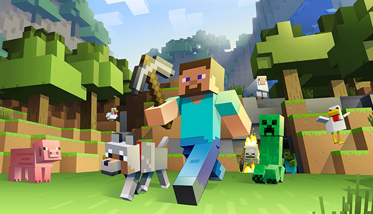
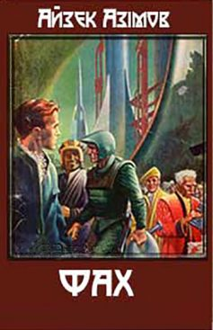
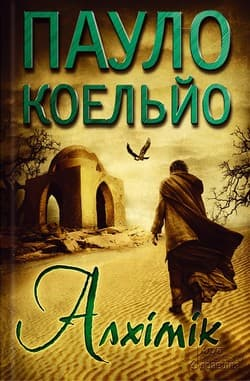
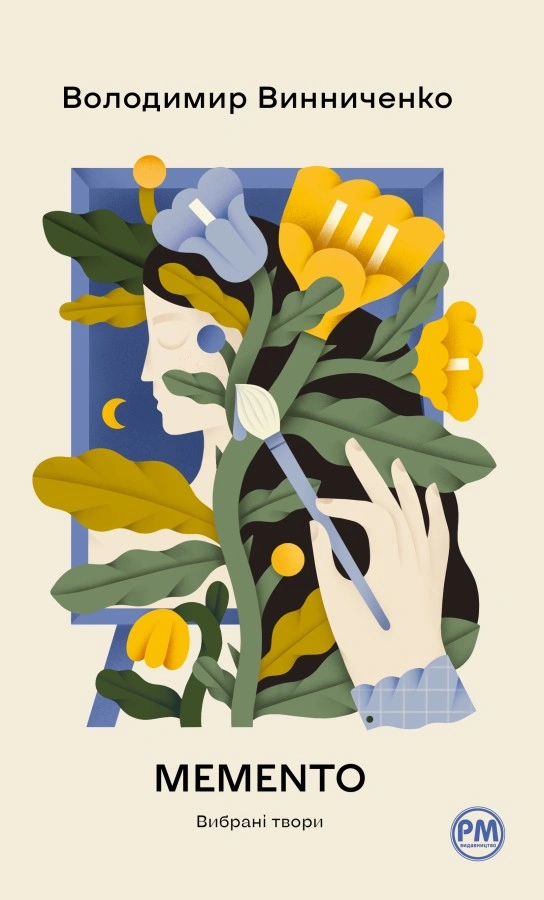
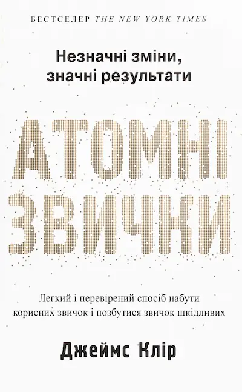
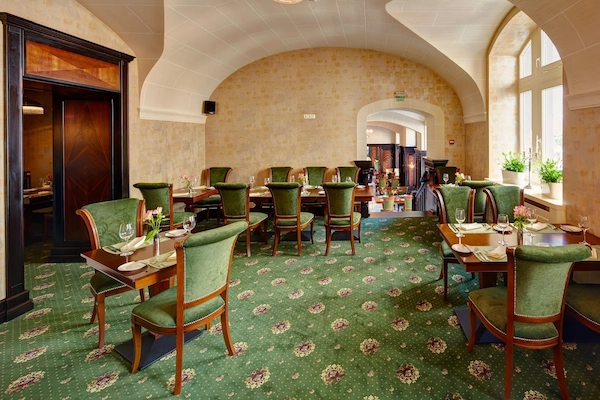

Вайолет Еверґарден
Моя оцінка: 100/10
Я студент, який обожнює вивчати щось нове та досліджувати глибокі та цікаві концепції та створювати цікаві речі. Якби мав декілька життів, спробував би себе в дуже різних сферах.
Навчався у звичайній школі з по рік. Найбільше запам'яталася цікаві та повчальні уроки з англійської мови, інформатики та зарубіжної літератури.
Зараз я здобуваю освіту за спеціальністю "Прикладна математика", 3 курс. Мої улюблені дисципліни — програмування на С++ та диференціальні рівняння.
Рівень володіння навичками:

Люблю досліджувати ігрові механіки гри та цікаві модифікації.
Подобається створювати фігурки з глини та пластиліну, особливо різноманітних істот, що населяють улюблені всесвіти.
| Обкладинка | Автор | Назва | Моє враження |
|---|---|---|---|
 |
Айзек Азімов | Фах | Ця повість про те, як освіта та вибір професії можуть впливати на майбутнє людини та суспільства. Дуже глибокі роздуми. |
 |
Пауло Коельйо | Алхімік | Надихаюча філософська історія про пошуки власного шляху, подолання страхів та здійснення мрій. |
| Володимир Винниченко | Момент | Неймовірна імпресіоністична новела про кохання, швидкоплинність життя та межу між життям і смертю. | |
 |
Володимир Винниченко | Чорна пантера та білий ведмідь | Сильна п'єса, яка розкриває психологічний конфлікт між творчим покликанням та родинними обов'язками. |
 |
Джеймс Клір | Атомні звички | Дуже дієва система для формування хороших звичок. |
Моя оцінка: 100/10

Моя оцінка: 11/10
Мій список невеликий, але кожне місце має для мене особливе значення.


Особистості, чий шлях, творчість та мислення мотивують мене рухатись вперед.
Інді-виконавиця
Чому: Робить дуже класну українську інді-музику та має неймовірно естетичний стиль. Її візуал, подача і загальний вайб просто перехоплюють подих і сильно надихають на творчість.

Математик, лауреат Філдсівської премії
Чому: Абсолютний сігма у світі математики. Людина з феноменальним IQ, яка розв'язує неможливі задачі. Надихає його геніальний, але при цьому дуже спокійний і системний підхід до вирішення найскладніших проблем.

Програміст, творець Linux та Git
Чому: Написав Linux просто як хобі, а Git створив за пару тижнів, бо його дратували існуючі системи. Надихає його безкомпромісність і те, як одна людина змінила всю світову IT-індустрію.
Розробка класичної гри в рамках командного проєкту. Реалізовано базову механіку, систему балів та рівнів складності.
Подивитись код на GitHubПрограма для чисельного розв'язання та побудови графіків математичних моделей. Реалізовано методи Ейлера та Рунге-Кутти для візуалізації фізичних процесів.
Подивитись на GitHubМій особистий спідран: план того, що я збираюся розірвати найближчим часом.
Найкращі ідеї та найчистіший код приходять до мене пізно вночі. Тиша, кава і темна тема в редакторі — це моє ідеальне комбо для продуктивності.
Я люблю шукати оптимальні та елегантні рішення не тільки під час програмування, а й у повсякденному житті, використовуючи логіку та математичне моделювання.
Можу з легкістю одночасно слухати глибокі наукові подкасти про астрофізику і при цьому ліпити фігурки улюблених персонажів з ігор.
Захоплююсь філософією відкритого програмного забезпечення. Вважаю, що знання та круті технології мають бути доступними кожному, як це колись зробив Лінус Торвальдс.
Навіть під час відпочинку я завжди щось вивчаю. Для мене найкращий відпочинок — це зміна діяльності, будь то японська мова чи новий факт про будову Всесвіту.
«Якщо ти впав — вставай. Якщо ти встав — не падай.»
«Для тих, хто не знає математики, важко відчути красу, найглибшу красу природи... Якщо ви хочете пізнати природу, оцінити її, необхідно розуміти мову, якою вона говорить.»